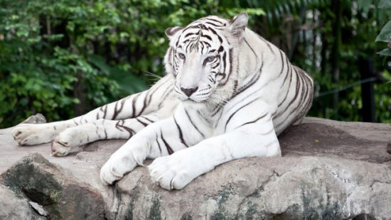

Existen 6 sub-especies de tigres. En esta especie la longitud corporal total es de 1.4 a 2.8, mientras la de la cola puede ser de 60 a 95 cm. El color de fondo de las partes superiores varia de anaranjado-rojizo a ocre rojizo y las partes inferiores son de tono cremoso o blanco. La cabeza, el cuerpo, la cola y las patas tienen una serie de rayas generalmente se disponen en plano vertical. En algunos especimenes, las rayas estan reducidas en los hombros, patas delanteras y flanco anteriores.
El tigre es muy adaptable y por este motivo se le encuentra en una gran variedad de habitats, siempre y cuando le ofrezcan una cobertura adecuada, agua y presas, un individuo puede tener uno o mas refugios preferidos dentro de su territorio. Estos refugios pueden ser cuevas, arboles y vegetacion densa. El tigre usualmente no trepa a los arboles pero es capaz de hacerlo. Se le ha visto cubrir una distancia de 10 m en un salto horizontal. Le gusta el agua y puede nadar muy bien, cruzando facilmente rios de 6 a 8 Km de ancho y algunas veces nadando mas de 29 Km es principalmente en el invierno en la parte norte de su rango de distribucion.
Para cazar el tigre depende mas de la vista y del oido que en el olfato. Usualmente, acecha con cautela su presa, aproximandose de lado o por atras hasta estar lo mas cerca posible. Entonces se lanza sobre ella y trata simultaneamente de derribarla y sujetar su garganta. La muerte puede ocurrir por estrangulacion o tambien por una mordida en el dorso del cuello. El cadaver a menudo es arrastrado hasta un area con cobertura o cerca del agua.
Despues de comer, el tigre puede cubrir los restos con hierbas o detritus y regresa para comidas posteriores en los dias subsecuentes. Un tigre puede consumir mas de 40 Kg de carne de una vez, lo que equivale a un quinto de su peso total. Sin embargo, este felino tiene que comer esta cantidad debido a que puede pasar varios dias antes de que coma algo, a pesar de ser un excelente cazador falla en el 90 % de sus intentos.
